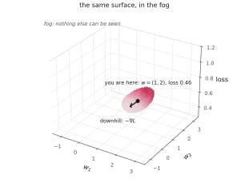
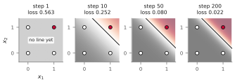
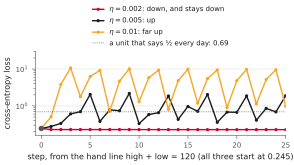
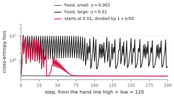

NJIT · CS 301 · INTRODUCTION TO DATA SCIENCE · FALL 2026 PDF
Meeting 6. Taught, Not Written
Act 1 The Slope Again · Act 2 The Update Rule · Act 3 The Learning Rate
A unit’s weights and bias determine its predictions. Labeled data let us compute the loss, and the gradient tells us how that loss changes with each parameter. Gradient descent repeatedly adjusts the parameters in the direction opposite to the gradient.
Act 1. The Slope Again
1.1 The local slope
Imagine standing on a hillside in thick fog. You cannot see the valley, but you can feel the slope under your feet. A small step downhill takes you to a new position, where you check the slope again. The downhill direction can change as you move.
In this analogy, position represents the parameter values and height represents the loss. The gradient gives the local slopes needed for an update; computing it does not require drawing the entire loss surface or testing a grid of parameter settings.

The figure varies two weights while holding the bias fixed, with loss on the vertical axis. If the bias also varies, the loss depends on three parameters and its graph would require a fourth axis.
The gradient points uphill, in the direction of steepest local increase in the loss, measured in the chosen parameter coordinates. Each partial derivative gives the slope along one coordinate, like the east–west and north–south slopes of a hillside. These components form the gradient vector. An update moves in the opposite direction, with its size controlled by the learning rate.
1.2 What one row contributes
We use temperature \(T=1\). On row \(i\), the unit computes
The label \(y_i\) is either 0 or 1. We call
the row’s error: the signed difference between the predicted probability and the label. This quantity is distinct from both the cross-entropy loss and the binary judgment of whether a classification is correct.
For example, an output of \(0.82\) with label 1 gives error \(-0.18\). The classification is correct, but increasing the probability would still improve the fit to that label. With label 0, an output of \(0.62\) gives error \(+0.62\): the probability needs to come down.
For the mean binary cross-entropy loss from meeting 4,
the derivative with respect to weight \(w_j\) is
Multiply each row’s error by that row’s \(j\)-th input, then average the products. Here \(n\) is the number of rows and \(x_{ij}\) is input \(j\) on row \(i\).
The multiplication follows from how the row’s loss depends on the weight. The error is the derivative of that loss with respect to the score. The input is the derivative of the score with respect to the weight: changing \(w_j\) by a small amount \(h\) changes this row’s score by \(h x_{ij}\). If \(x_{ij}=0\), changing \(w_j\) cannot affect this row’s score. Its contribution to this weight’s derivative is zero, even when its error is large.
The same mistake can affect a course grade differently on a short quiz and a heavily weighted exam. Similarly, a row’s gradient contribution depends on both its error and a multiplier. Here that multiplier is the input value. Its numerical size depends on the units of measurement: a length expressed in centimeters is 100 times its value in meters, but the feature’s importance has not changed.
The bias contributes to every score with multiplier 1, so
The threshold’s minus sign comes from \(s_i=\mathbf{w}\cdot\mathbf{x}_i-\theta\). The bias and threshold describe the same parameter, with \(b=-\theta\); we train one or the other, not both independently.
1.3 Averaging conflicting feedback
Suppose course evaluations describe a class as both “too hard” and “too easy.” Responding to one comment may conflict with another. Likewise, one row’s gradient contribution may favor increasing a weight while another favors decreasing it. Their average accounts for the size of each contribution. Equal numbers of positive and negative contributions cancel only when their magnitudes balance.
The comments might also concern different changes: “Keep teaching the same way, but change your haircut.” Each parameter likewise has its own gradient component. For weight \(w_j\), the component is \(\frac{1}{n}\sum_i e_i x_{ij}\), an average across rows using input \(j\) in every product.
Act 2. The Update Rule
2.1 Updating the parameters
Choose a positive learning rate \(\eta\) (the Greek letter eta). For each weight, subtract the learning rate times its derivative:
For the bias, use the same rule:
All derivatives are evaluated at the same old setting. Compute the gradient first, then update the parameters together. Recomputing a derivative halfway through the update would give a different procedure.
If a derivative is positive, increasing that parameter locally raises the loss, so the update decreases it. If the derivative is negative, the update increases the parameter. The minus sign handles both cases. At a setting with a nonzero gradient, a sufficiently small positive learning rate decreases the loss. A large step can overshoot the region where the local slope is a useful guide.
In threshold notation, the rule becomes
The plus sign follows from the minus sign on \(\theta\) in the score. A positive mean error means that the mean predicted probability exceeds the mean label. Holding the weights fixed, raising \(\theta\) lowers every score and therefore every predicted probability.
2.2 One complete update on AND
Example 2.1 From three correct rows to four
Start at \(\mathbf{w}=(1,2)\), \(\theta=1.5\). The unit predicts 1 when its score is at least zero. Its initial scores on the four AND rows are \(-1.5\), \(+0.5\), \(-0.5\), and \(+1.5\), so it gets \((0,1)\) wrong. The loss is about \(0.4627\).
Using the probabilities rounded to two decimal places gives this calculation:
| \(x_1\) | \(x_2\) | \(y\) | \(\hat y\) | \(e=\hat y-y\) | \(e x_1\) | \(e x_2\) |
|---|---|---|---|---|---|---|
| 0 | 0 | 0 | 0.18 | \(+0.18\) | \(0.00\) | \(0.00\) |
| 0 | 1 | 0 | 0.62 | \(+0.62\) | \(0.00\) | \(+0.62\) |
| 1 | 0 | 0 | 0.38 | \(+0.38\) | \(+0.38\) | \(0.00\) |
| 1 | 1 | 1 | 0.82 | \(-0.18\) | \(-0.18\) | \(-0.18\) |
| mean | \(+0.25\) | \(+0.05\) | \(+0.11\) | |||
Every mean divides by four, including the zero entries. The gradient with respect to \((w_1,w_2,\theta)\) is approximately \((0.05,0.11,-0.25)\).
At learning rate \(\eta=2\), the update is
The updated score is \(s=0.90x_1+1.78x_2-2.00\):
| \(x_1\) | \(x_2\) | label | new score | prediction |
|---|---|---|---|---|
| 0 | 0 | 0 | \(-2.00\) | 0 |
| 0 | 1 | 0 | \(-0.22\) | 0 |
| 1 | 0 | 0 | \(-1.10\) | 0 |
| 1 | 1 | 1 | \(+0.68\) | 1 |
All four classifications are now correct. The loss has fallen to about \(0.3533\). Using unrounded probabilities changes the new weights slightly, to approximately \((0.90244,1.77998)\), and gives the same loss to four decimal places.
The threshold changed the most: it rose by \(0.50\), while the weights fell by \(0.10\) and \(0.22\). The positive mean error causes this increase. It measures the difference between the mean probability and the mean label, even though three of the four classifications were already correct.
One step need not fix every classification. From this same starting setting, \(\eta=0.5\) still leaves \((0,1)\) on the wrong side of the line. Reducing the mean loss can leave individual rows misclassified.
2.3 Putting the update in a loop
After changing the parameters, recompute the predictions and the gradient. The repeated calculation is:
- Compute each row’s probability \(\hat y_i\) at the current setting.
- Compute each error \(e_i=\hat y_i-y_i\).
- For each weight, average \(e_i x_{ij}\); for the bias, average \(e_i\).
- Subtract \(\eta\) times each derivative from its parameter.
- Repeat until the chosen stopping condition is met.
This is full-batch gradient descent: every update uses every training row. It is like completing the whole practice quiz before using its feedback to adjust how you study.
With NumPy arrays, the loop can be written as follows. Here X has one row per example and one column per input; y is a one-dimensional array of labels. unit.probability(X) returns the corresponding one-dimensional array of probabilities at \(T=1\), and unit.w holds the weights.
import numpy as np
unit.w = np.asarray(unit.w, dtype=float)
for step in range(n_steps):
p = unit.probability(X)
err = p - y
grad_w = (X.T @ err) / len(y)
grad_theta = -err.mean()
unit.w -= eta * grad_w
unit.theta -= eta * grad_theta
For arrays, p - y subtracts corresponding entries. If p contains \([0.18,0.62,0.38,0.82]\) and y contains \([0,0,0,1]\), the result contains \([0.18,0.62,0.38,-0.18]\). Plain Python lists do not support this subtraction.
The expression X.T @ err computes a dot product for each input column. Its \(j\)-th entry is \(\sum_i x_{ij}e_i\). Dividing by len(y) gives the required average. It is the average of the products, not the product of the average input and the average error. NumPy performs the row arithmetic inside its array operations; the compact expression still requires arithmetic across the rows.
All gradient components are computed before either parameter update, so they use the same predictions. The last line could equivalently be written unit.theta += eta * err.mean().
If there are 100 practice questions, you might instead review your mistakes after each group of ten. Training can also update from a subset of rows: mini-batch gradient descent uses the mean gradient contribution from a small batch. A randomly sampled batch gives an estimate of the full gradient. It costs less per update, but its direction varies with the sample and an individual update can increase the full-dataset loss.
2.4 Training a unit on AND
Start a fresh AND unit with all parameters zero and use \(\eta=4\). Every initial probability is \(0.5\). The errors are \(+0.5,+0.5,+0.5,-0.5\). For either weight, the positive and negative contributions cancel; the mean error is \(0.25\). The first step therefore leaves both weights at zero and raises the threshold to 1.
At this point every score is \(-1\). The unit predicts 0 on all four rows, which matches the three zero labels. It has no decision line yet: with both weights zero, changing the inputs cannot change its prediction. Later steps give the weights nonzero values and allow the unit to distinguish the corners.

The line separates predictions 0 and 1; the shading shows the probabilities. AND treats its two inputs symmetrically. Starting with equal weights and applying the same rule to each keeps them equal.
| updates | loss | \((w_1,w_2,\theta)\) |
|---|---|---|
| 1 | 0.5633 | \((0.000,\ 0.000,\ 1.000)\) |
| 10 | 0.2523 | \((1.812,\ 1.812,\ 3.002)\) |
| 50 | 0.0801 | \((4.277,\ 4.277,\ 6.607)\) |
| 200 | 0.0216 | \((6.976,\ 6.976,\ 10.637)\) |
| 2,000 | 0.0021 | \((11.628,\ 11.628,\ 17.610)\) |
The unit first classifies all four rows correctly after four updates. The later updates keep reducing the loss by making the correct predictions more confident. The boundary can change very little while the probabilities continue to change substantially.
The same loop can train separate units on OR and NAND. Keep the inputs, zero initialization, and learning rate 4; change the labels:
| table | first all-correct step | loss at step 200 | all rows correct? |
|---|---|---|---|
| AND | 4 | 0.0216 | yes |
| OR | 5 | 0.0116 | yes |
| NAND | 4 | 0.0216 | yes |
The same update rule fits each table. Changing the labels changes the gradients and the resulting parameters.
2.5 When to stop
For AND, a finite sigmoid score always gives a probability strictly between 0 and 1. Once every row has a score strictly on the correct side of zero, scaling up all three parameters makes every probability closer to its label. The loss approaches zero but never reaches zero at finite parameter values. With all three parameters free, this problem has no finite loss-minimizing setting.
For this AND run, choose a stopping condition that can be reached: a maximum number of updates, a small gradient norm, or a small change in loss. If the goal is only to reproduce the truth table, stop when all rows are classified correctly. A stricter loss target requires more confident predictions and may need further updates.
On other datasets, gradient contributions can cancel at finite parameters even when individual prediction errors remain. A small learning rate can also produce small parameter changes. Check the loss and predictions when interpreting either stopping condition.
2.6 Cost and the weather example
Computing all components of the gradient takes a pass over the data. For \(n\) rows with \(d\) inputs, the direct calculation uses work proportional to \(nd\), as does computing all predictions and the loss. The gradient does not require a separate dataset pass for each parameter. The total training cost also depends on how many updates are needed.
On AND, 50 gradient updates from zero at \(\eta=4\) reach loss \(0.080\). For comparison, the meeting-5 grid tests \(25^3=15{,}625\) settings and finds loss \(0.096\); the displayed random-search run reaches about \(0.11\) after 1,000 guesses. Counting data passes gives an approximate cost comparison. These are results for the specified runs: the grid and random search use a bounded search box, while this gradient run is not restricted to that box.
For the Newark weather data, the inputs are daily high and low temperatures, and the label says whether the date falls in the warm half of the year, May through October. We use the same 6,865 complete rows as before; the date itself is not an input. Start from the hand line high \(+\) low \(=120\), expressed at \(T=1\) as \(\mathbf{w}=(0.1,0.1)\) and \(b=-12\). Updating all three parameters at \(\eta=0.002\) gives:
| updates | loss | days classified correctly |
|---|---|---|
| 0 | 0.2447 | 89.7% |
| 100 | 0.2234 | 90.6% |
| 500 | 0.2181 | 90.8% |
| 40,000 | 0.2174 | 91.0% |
Most of the improvement in this run occurs within the first few hundred updates. The loss approaches \(0.22\), well above zero. The dataset contains identical high–low pairs with opposite labels, so these two inputs cannot determine every label correctly, regardless of how long we train. The reported percentages are measured on the training rows; they do not measure performance on unseen days.
Act 3. The Learning Rate
3.1 Learning rate and step size
The gradient gives a direction and a magnitude. The learning rate scales the change. If \(\boldsymbol{q}\) contains all the parameters being trained, then
Here \(\nabla L\) includes the derivatives for every component of \(\boldsymbol{q}\), including the bias or threshold if it is free. A learning rate of 2 gives a step whose length is twice the gradient’s norm. At a fixed rate, the steps shrink when the gradient shrinks.
The slope is local. In the fog analogy, feeling downhill under one foot does not tell you how the ground behaves fifty meters away. For a small step, the first-order estimate is
If the gradient is nonzero, this predicts a decrease. The approximation becomes less reliable as the step grows.
A very small learning rate can make progress slow. On AND, starting at \((1,2,1.5)\) with \(\eta=0.01\), the loss goes from \(0.4627\) to \(0.4482\) after 20 steps and \(0.4037\) after 100. The unit still misclassifies \((0,1)\) at step 100.
3.2 Overshooting
An excessive rate can send the unit across a valley and up the other side. The next gradient may point back, producing repeated large swings. A direction that is downhill locally can still lead to a higher loss if followed too far.
Compare three rates on the weather data, starting from the same hand line. At \(\eta=0.002\), the loss remains low after the initial decrease. At \(\eta=0.005\) it oscillates, and at \(\eta=0.01\) the swings are much larger.

For \(\eta=0.01\), the first two updates take the loss from about \(0.245\) to \(0.505\) and then \(3.821\). The step is too large for this setting and scale of inputs. A rate that works on the 0-or-1 inputs of AND need not work on temperatures measured in degrees.
3.3 Reducing the rate during training
A learning-rate schedule specifies how the rate changes over the training updates. Decreasing the rate can reduce oscillations later in a run. One schedule used on the weather example is
where \(k\) counts updates. The first rate is about \(0.0098\); at update 50 it is \(0.005\), and at update 200 it is \(0.002\).

The scheduled run initially overshoots too, but the oscillations subside as the rate decreases. After 200 updates its loss is about \(0.2201\), compared with \(0.2207\) for the fixed rate \(0.002\). The similar final losses show that a decreasing rate can stabilize this run, while a suitable constant rate also performs well.
3.4 Learning analogies
In this model, learning consists of computing errors, averaging gradient contributions, and updating parameters. Comparisons with human learning can help explain the process, but the mathematical rule here describes an artificial unit.
Momentum carries part of the previous update into the next one. Curriculum learning orders training examples, for instance from easier to harder, much as a student might progress through practice problems. Either change must be evaluated by comparing training results.
For curriculum learning: Bengio et al., Curriculum Learning (2009).
In a larger network, dropout randomly omits units during training, temporarily removing their contributions and associated connections. Training uses different subsets of units while retaining the data rows.
For the method and its motivation: Srivastava et al., Dropout: A Simple Way to Prevent Neural Networks from Overfitting (2014).
A teacher following conversations in a room distributes attention among them. In a Transformer’s attention mechanism, each position in a sequence assigns numerical weights to information from the available positions. In each calculation, the weights are nonnegative and add to one, and the output is a weighted sum. The model forms many such combinations, each with its own weights.
For the attention calculation: Vaswani et al., Attention Is All You Need (2017), Section 3.2.